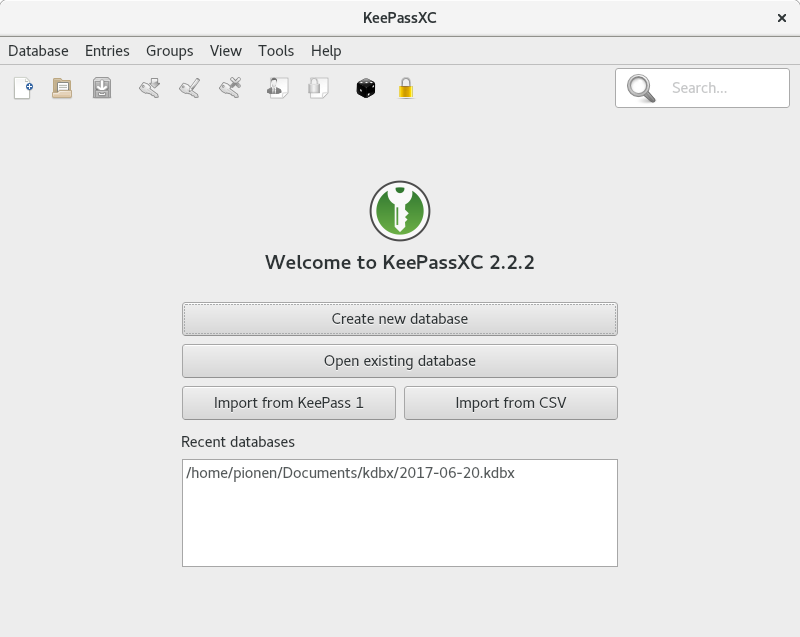
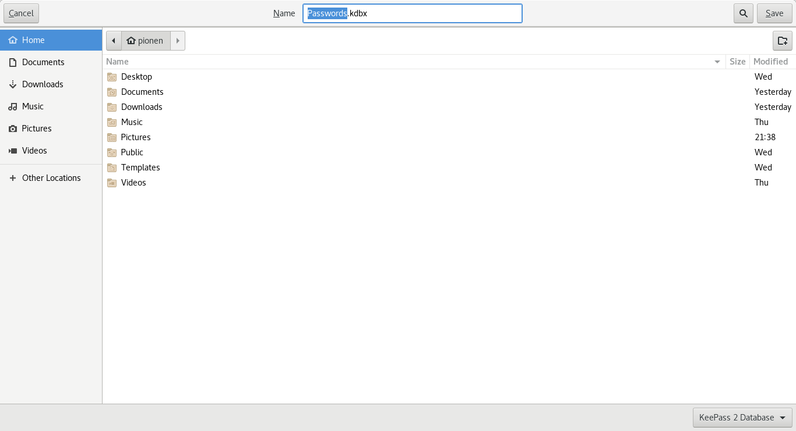
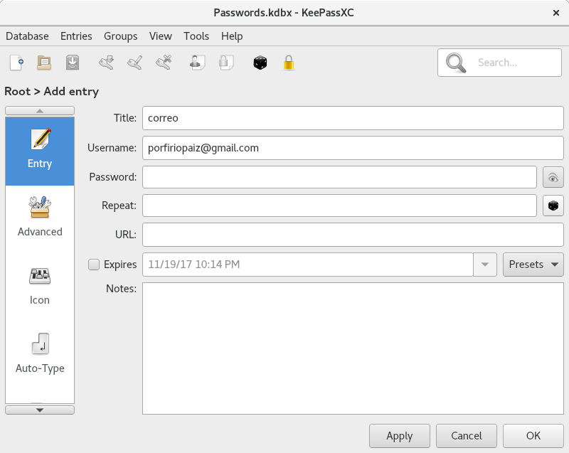
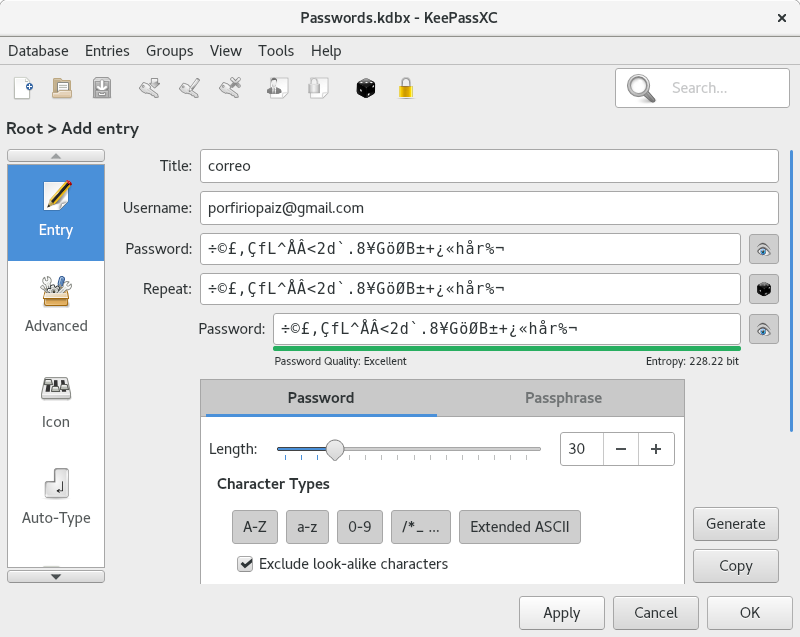

KeePassXC is one of the first programs I install after booting a fresh system.
In this post, I’ll show you how to install KeePassXC on Fedora and Debian, how to use it, how it simplifies managing hundreds of accounts and associated passwords, and how to generate secure passwords with high entropy.
Installation
Fedora
su -c 'dnf install keepassxc'
Debian
su -c 'apt-get install keepassx'
Creating a Password Database
The first step is to create your first database, where all generated passwords for your accounts will be stored.
Launch KeePassXC:

Create a new database:
Assign a name to the *.kdbx file (the database):
Set a master password to encrypt the database (Passwords.kdbx) and click OK:

Add a new account and password by clicking the Key icon with a green arrow:

Fill in the details: - Add a title to identify the account. - Specify the username for the account.
Generate a secure password: - Click the black dice icon to open the password generator. - Adjust the character length for stronger passwords. - Select the character groups to include:
- Uppercase letters: A-Z
- Lowercase letters: a-z
- Numbers: 0-9
- Special characters: /*_ ...
- Extended ASCII characters (optional).
- Enable:
- Exclude look-alike characters
- Pick characters from every group
- Click Generate to create the password, then click Copy to copy it to the clipboard.

Paste the generated password into the Password and Repeat fields using Ctrl-v:

Verify the password by clicking the Eye icon, then click Apply and OK.

10. Save your changes by clicking the blue save icon. Confirm that the asterisk (*) at the top disappears, indicating the changes have been saved.

Useful Keyboard Shortcuts
- Ctrl-b: Copy the username to the clipboard.
- Ctrl-c: Copy the password to the clipboard.
- Ctrl-e: Edit the selected account entry.
- Ctrl-n: Add a new account to the database.
Auto-Type Shortcut
The Auto-Type shortcut, Ctrl-v, is my favorite. It allows KeePassXC to enter the username and password for an account directly into the login fields of a webpage or application.
For it to work, KeePassXC and the target field must be adjacent in the task-switching order (Alt-Tab).
Example: 1. Select an entry with a URL:

Press Ctrl-u to open the login page in your default web browser:

3. Switch back to KeePassXC using Alt-Tab and press Ctrl-v to enter the username and password automatically:

KeePassXC will then complete the login process for you.